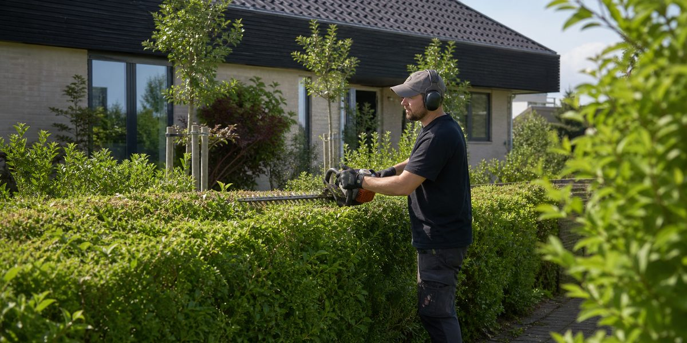

Højde og form
Vi aftaler den ønskede højde og form ud fra hækkens nuværende tilstand.
Havearbejde · Struer og Thyholm
Få hjælp til at holde hækken i form. Vi aftaler, hvilke sider og hvilken højde der skal klippes, før arbejdet starter.
Få et skriftligt tilbudRing 77 17 85 88
Vi aftaler den ønskede højde og form ud fra hækkens nuværende tilstand.
Beskriv, om opgaven gælder toppen, én side eller begge sider. Adgang fra begge sider indgår i vurderingen.
Vi aftaler opsamling og placering af afklip. Bortkørsel beskrives særskilt i tilbuddet.
Fotos kan sendes til kontakt@hutsol.dk. Formularen kan bruges til en kort beskrivelse.
Gør adgangen langs hækken fri, og vis os ledninger, hegn og planter, som kræver hensyn.
Send oplysninger om opgaven, by og ønsket tidspunkt. Vi afklarer spørgsmål og behov for et besøg.
Du får et skriftligt tilbud. Omfang, pris og adgang aftales, før arbejdet starter.
Vi udfører det aftalte arbejde og gennemgår opgaven ud fra den aftalte liste.
Hækkens mål, omfanget af klipningen, adgangen og håndteringen af afklip afgør opgavens størrelse.
Se vores priser. En forespørgsel er ikke en bekræftet booking eller et løfte om, at opgaven kan udføres på to timer.
Beskriv adgangen på begge sider. Vi aftaler de sider, som opgaven omfatter.
Bortkørsel aftales særskilt. Oplys, om afklippet kan blive på grunden.
En større ændring skal vurderes særskilt. Send fotos og den ønskede højde.
Vi hjælper i Struer, Holstebro, Lemvig og på Thyholm samt nærområder. Fortæl, hvor opgaven er.
Få et skriftligt tilbudRing til os